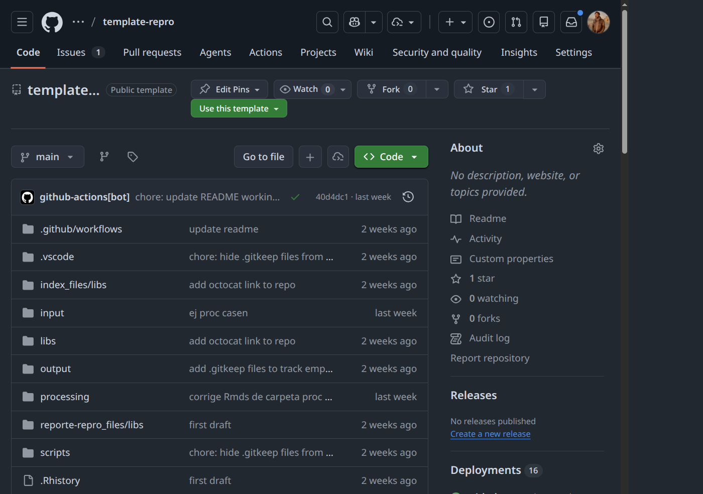
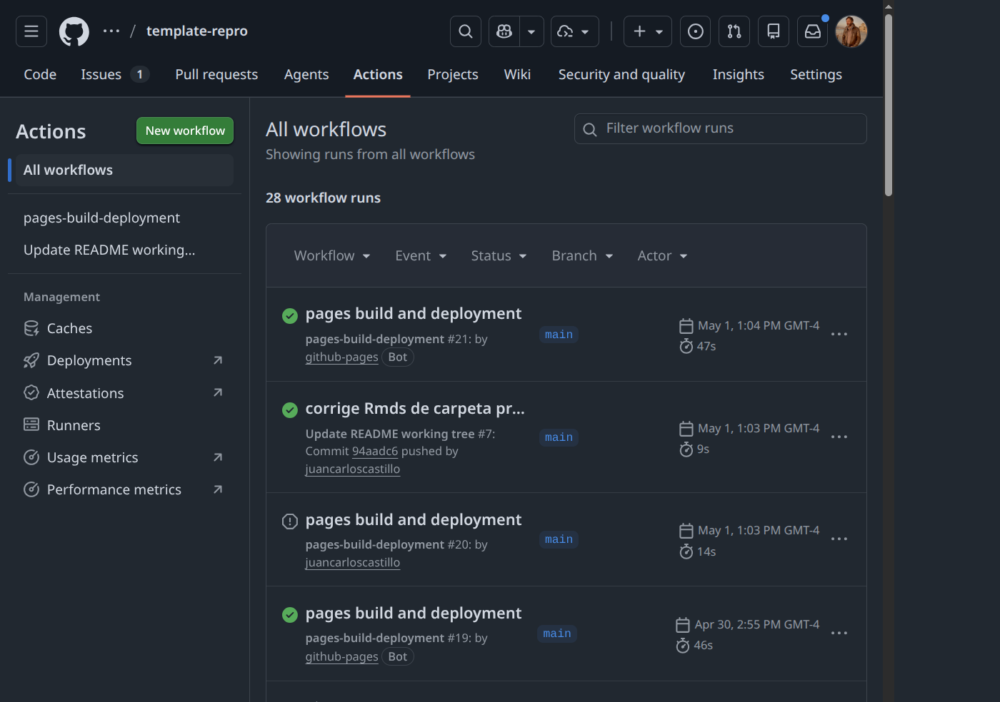

Práctico 6: Publicación de resultados con GitHub Pages
Correspondiente a la sesión del jueves, 7 de mayo de 2026
Objetivo de la sesión
El objetivo de esta sesión es implementar GitHub Pages en el repositorio grupal del trabajo de reproducibilidad, de modo que los resultados y materiales del proyecto queden publicados en la web de forma abierta, trazable y reproducible.
Al finalizar este práctico podrán:
- Explicar las dos formas de publicar con GitHub Pages y cuándo usar cada una.
- Configurar la publicación desde la carpeta
docs/para mantener la raíz del repositorio limpia. - Verificar el despliegue y diagnosticar errores comunes.
- Usar Hypothes.is para anotar y comentar sitios web publicados.
Punto de partida: el repositorio grupal
El trabajo de reproducibilidad que han desarrollado utiliza como base la plantilla del protocolo IPO disponible en:
https://github.com/data-soc/template-repro

Esta plantilla organiza el proyecto en tres carpetas principales:
| Carpeta | Contenido |
|---|---|
input/ |
Datos originales, imágenes, bibliografía |
procesamiento/ |
Scripts de preparación y análisis |
output/ |
Tablas y figuras producto del análisis |
El archivo index.qmd en la raíz sirve como fuente de la página principal del informe.
Publicando con GitHub Pages
GitHub Pages ofrece tres modalidades de publicación, todas configurables desde Settings → Pages del repositorio:
| Modalidad | Source en Settings | ¿Qué publica? | Cuándo usarla |
|---|---|---|---|
| 1. Desde raíz | Deploy from a branch → / |
index.html en la raíz |
Sitios muy simples, tutoriales rápidos |
2. Desde /docs |
Deploy from a branch → /docs |
Carpeta docs/ en la raíz |
Proyectos Quarto/RMarkdown: separa fuentes de salida |
| 3. GitHub Actions | GitHub Actions | Lo que defina el workflow | Cuando el sitio se construye en el servidor (CI/CD) |
En este práctico vamos a implementar las dos primeras modalidades, que son las más sencillas para proyectos Quarto. La tercera modalidad se utiliza cuando el proceso de construcción del sitio es complejo o requiere herramientas específicas que no se pueden ejecutar localmente, pero no es necesaria para nuestro caso.
1 Alternativa 1: desde la raíz (main + /)
Comenzaremos por la modalidad más simple para entender el flujo completo de publicación.
- En VS Code, abrir
index.qmdy hacer un preview local con Quarto Preview para asegurarnos de que se ve bien. Esto genera un archivoindex.htmlen la raíz del repositorio. - Commit + push
- En GitHub, ir a Settings → Pages.
- En Build and deployment, seleccionar:
- Source:
Deploy from a branch - Branch:
main - Folder:
/(raíz)
Este procedimiento generará una URL del tipo https://<usuario>.github.io/<repositorio>/ donde se publicará el sitio mediante una acción de Github (Github Actions), que se encuentran en la siguiente pestaña:

Las Actions son procesos automáticos que se ejecutan cada vez que se hace un push al repositorio. En este caso, el proceso de Github Pages se encarga de tomar el archivo index.html generado por Quarto y publicarlo en la URL asignada.
¿Cómo ver el resultado? Si se van a Actions, pueden buscar el proceso llamado pages build and deployment y hacer clic para ver su historial de ejecuciones. Si el proceso se ejecutó correctamente, verán un ícono verde (✓) y podrán hacer clic sobre el url que aparece en el recuadro “deploy” para ver el sitio publicado.
Esta modalidad es recomendable cuando el sitio tiene un único index.html y pocos archivos adicionales.
2 Alternativa 2: Escalar a una publicación más ordenada (main + /docs)
Cuando el proyecto empieza a crecer (subpáginas, archivos anidados, más recursos), conviene mover la salida renderizada a docs/ para no colapsar la raíz del repositorio.
2.1 Configurar _quarto.yml para generar docs/
Para que Quarto genere la salida en docs/, generar un archivo nuevo en la raíz con el título _quarto.yml con el siguiente contenido:
---
project:
type: website
output-dir: docs
---Luego:
- Renderizar desde VS Code con Render (▶) en
index.qmd. - Revisar localmente con Quarto Preview.
- Commit + push.
Esto hace que el archivo index.html y los recursos asociados se generen dentro de docs/, manteniendo la raíz del repositorio limpia.
3 Agregar dirección al README.md
Para facilitar el acceso al sitio publicado, es recomendable agregar un enlace directo en el README.md del repositorio. Para esto:
Editar
README.mdy agregar una sección al final con el título “Sitio publicado” o similar.Incluir un enlace a la URL de GitHub Pages, por ejemplo:
Commit + push.
Verificar que el enlace funciona correctamente.
4 Errores frecuentes y cómo resolverlos
| Síntoma | Causa probable | Solución |
|---|---|---|
| El sitio no aparece | Pages aún no activado o sin primer commit en docs/ |
Verificar configuración y volver a hacer push |
| Página en blanco | index.html no existe en docs/ |
Renderizar con quarto render y volver a subir docs/ |
| Rutas rotas (imágenes o links) | Rutas absolutas en el código | Usar rutas relativas en los archivos .qmd |
| El sitio no se actualiza | Caché del navegador | Abrir en modo incógnito o forzar recarga con Ctrl+Shift+R |
| Error 404 en Actions | Permisos insuficientes del workflow | Ir a Settings → Actions → General → activar Read and write permissions |
5 Usar Hypothes.is para anotar el sitio publicado
Una de las posibles limitaciones de publicar en html es poder obtener feedback directo, lo que si es posible por ejemplo con comentarios en Google Docs. Sin embargo, con la herramienta de anotación web Hypothes.is, es posible dejar comentarios y anotaciones directamente sobre el sitio publicado, lo que facilita la colaboración y el intercambio de ideas.
5.1 Crear cuenta en Hypothes.is
- Ir a https://web.hypothes.is/ y hacer clic en Get Started.
- Completar correo electrónico, nombre de usuario y contraseña.
- Confirmar la cuenta desde el correo.
5.2 Instalar la extensión
- Chrome / Brave: instalar desde la Chrome Web Store.
- Firefox: usar el bookmarklet disponible en la página de inicio.
5.3 Anotar el sitio del grupo
- Abrir la URL del sitio GitHub Pages del grupo.
- Activar la extensión (ícono en la barra del navegador).
- Seleccionar un fragmento de texto y escribir un comentario.
- Elegir visibilidad:
- Public: visible para todos.
- Only me: anotación privada.
- Grupo del curso: crear un grupo en Hypothes.is e invitar a los compañeros.
Para crear un grupo en Hypothes.is: ir a https://hypothes.is/groups/new, crear el grupo y compartir el enlace de invitación.
6 Actividad
Objetivo: Publicar el sitio del repositorio grupal con GitHub Pages y verificar que el despliegue funciona.
Pasos:
- Publicar primero la versión simple desde
main /. - Verificar el resultado en la URL publicada.
- Migrar el proyecto a
output-dir: docsen_quarto.yml. - Renderizar de nuevo desde VS Code y comprobar con Quarto Preview.
- Cambiar Pages a
main /docs. - Agregar el enlace al sitio en el
README.md. - Verificar que el sitio se despliega correctamente y que el enlace en el README funciona.
- Hacerse cuenta en Hypothes.is y dejar una anotación pública sobre el sitio publicado.
Recuerden hacer git pull antes de editar para evitar conflictos con los cambios de sus compañeros de grupo.